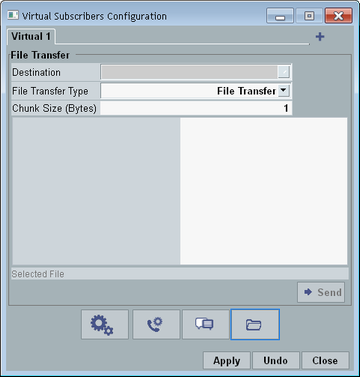

File transfers from virtual subscribers to DUTs are configured and initiated via the "Virtual Subscribers Configuration" dialog box. Press the "Virtual Subscriber" hotkey to open the dialog box. Option R&S CMW-KAA21 is required.
The dialog box provides several views. This section describes the view shown in the following figure. The highlighted button selects this view for display.

A file transfer initiated via this dialog box uses the message session relay protocol (MSRP). For file transfer via FTP, see "FTP Tab".
Selects the destination to which the file is transferred.
The list of destinations is the same as for mobile-terminating calls, see "Destination".
Remote command:Both transfer types use the message session relay protocol (MSRP), but with different header structures.
Remote command:The file is divided into chunks with the specified size. Each chunk is transferred in a separate MSRP packet.
Remote command:Store your files on the samba share of the DAU, in the directory ims/rcs/samples.
The available files are listed in the lower part of the dialog box.
The currently selected file is indicated above the "Send" button.
Remote command:Starts the file transfer.
The dialog box is closed automatically. You can check the message transfer in the "Events" area of the main view and at the DUT.
Remote command: